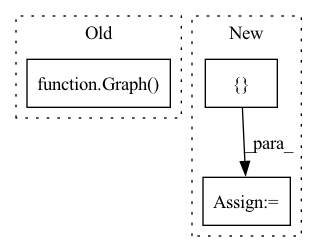

Pattern ID :11778

Before Change
def test_save(self):
// Given
graph = [Graph(BASE_GRAPH,
BASE_GRAPH_NODE_FEATURES,
BASE_GRAPH_EDGE_FEATURES)]
filename_expected = "tests/data/test-dataset.pickle"
After Change
features = BASE_GRAPH_NODE_FEATURES
labels = BASE_GRAPH
filenames_to_save = ["features.pickle", "labels.pickle"]
filenames_expected = ["tests/data/features.pickle", "tests/data/labels.pickle"]
// When
In pattern: SUPERPATTERN
Frequency: 3
Non-data size: 3
Instances
Fragment ID: 39611692
Project Name: kovanostra/message-passing-neural-network
Commit Name: 2ac5c7880bc2791600adf50d28c933fac126000b
Time: 2020-03-28
Author: kovanostra@gmail.com
File Name: tests/repository/test_training_data_repository.py
M Class Name: TestTrainingDataRepository
N Class Name: TestTrainingDataRepository
M Method Name: test_save(1)
N Method Name: test_save(1)
M Parent Class: TestCase
N Parent Class: TestCase
M File Name: tests/repository/test_training_data_repository.py
N File Name: tests/repository/test_training_data_repository.py
M Start Line: 17
M End Line: 28
N Start Line: 18
N End Line: 32
'>
Before Change
// Given
self.graph_encoder.time_steps = 1
encoded_graph_shape_expected = BASE_GRAPH_NODE_FEATURES.shape
graph = Graph(BASE_GRAPH,
BASE_GRAPH_NODE_FEATURES)
// When
encoded_graph_shape = self.graph_encoder.encode(graph).shape
After Change
batch_size = 1
node_features = BASE_GRAPH_NODE_FEATURES
adjacency_matrix = BASE_GRAPH
raw_training_data = [(node_features, adjacency_matrix)]
graph_dataset = GraphDataset(raw_training_data)
training_data = DataLoader(graph_dataset, batch_size)
encoded_graph_shape_expected = [batch_size] + list(BASE_GRAPH_NODE_FEATURES.shape)
'>
Fragment ID: 39611688
Project Name: kovanostra/message-passing-neural-network
Commit Name: 5dad6fe6189f37de8425109fa1d3f55dd5960f46
Time: 2020-04-22
Author: kovanostra@gmail.com
File Name: tests/domain/test_graph_encoder.py
M Class Name: TestGraphEncoder
N Class Name: TestGraphEncoder
M Method Name: test_encode_graph_returns_the_expected_shape(1)
N Method Name: test_encode_graph_returns_the_expected_shape(1)
M Parent Class: TestCase
N Parent Class: TestCase
M File Name: tests/domain/test_graph_encoder.py
N File Name: tests/domain/test_graph_encoder.py
M Start Line: 44
M End Line: 50
N Start Line: 61
N End Line: 72
'>
Before Change
self.graph_encoder.time_steps = 1
node = 0
node_encoding_expected = to.tensor([0.3909883, 0.3909883])
graph = Graph(BASE_GRAPH,
BASE_GRAPH_NODE_FEATURES)
// When
node_encoding = self.graph_encoder.encode(graph)[node]
After Change
batch_size = 1
node_features = BASE_GRAPH_NODE_FEATURES
adjacency_matrix = BASE_GRAPH
raw_training_data = [(node_features, adjacency_matrix)]
graph_dataset = GraphDataset(raw_training_data)
training_data = DataLoader(graph_dataset, batch_size)
node_encoding_expected = to.tensor([[0.3909883, 0.3909883]])
// When
'>
Fragment ID: 39611685
Project Name: kovanostra/message-passing-neural-network
Commit Name: 5dad6fe6189f37de8425109fa1d3f55dd5960f46
Time: 2020-04-22
Author: kovanostra@gmail.com
File Name: tests/domain/test_graph_encoder.py
M Class Name: TestGraphEncoder
N Class Name: TestGraphEncoder
M Method Name: test_encode_graph_returns_the_expected_encoding_for_a_node_after_one_time_step(1)
N Method Name: test_encode_graph_returns_the_expected_encoding_for_a_node_after_one_time_step(1)
M Parent Class: TestCase
N Parent Class: TestCase
M File Name: tests/domain/test_graph_encoder.py
N File Name: tests/domain/test_graph_encoder.py
M Start Line: 30
M End Line: 37
N Start Line: 43
N End Line: 54